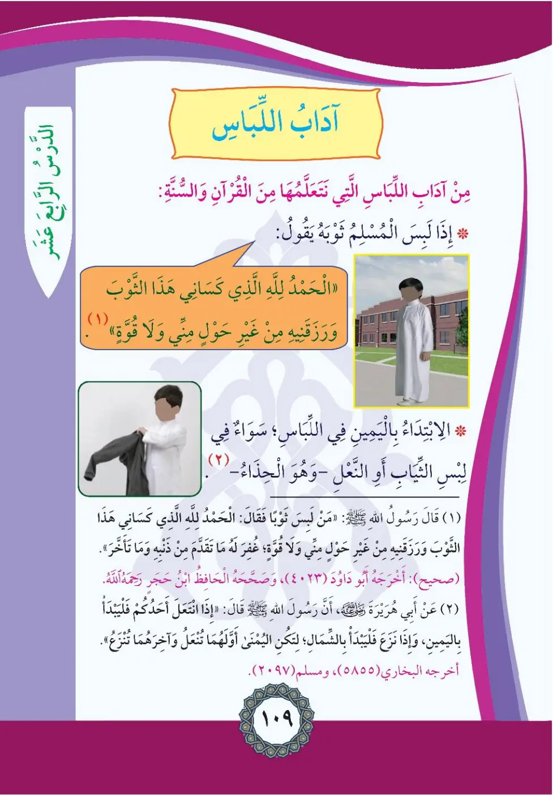
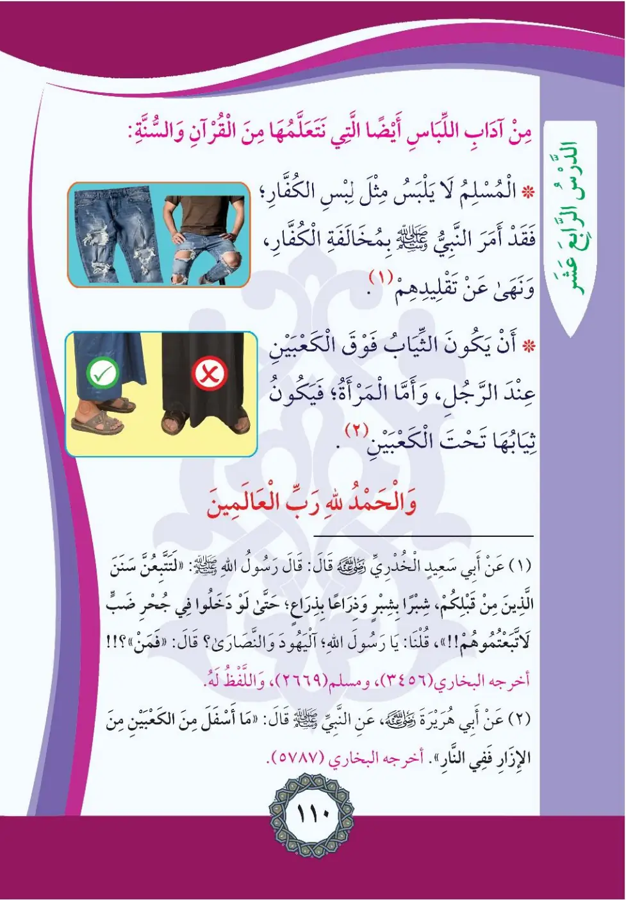

Stage 2·المرحلة الثانية⭐ Unit 1
آدَابُ اللِّبَاسِ Manners of Clothing
From the Textbookpp. 110–111


من آداب اللباس التي نتعلمها من القرآن والسنة: إذا لبس المسلم ثوبه يقول: «الحمد لله الذي كساني هذا الثوب ورزقنيه من غير حول مني ولا قوة». وفي اللباس: الابتداء باليمين في لبس الثياب أو التعل (الحذاء).
Min adabi al-libas: idha labisa al-muslimu thawbahu yaqulu: Al-hamdu lillahi alladhi kasani hadha ath-thawba.
From the manners of clothing we learn from the Quran and sunnah:
When a Muslim puts on his garment he says: "All praise is for Allah who clothed me with this garment and provided it for me without any power or strength from myself."
In dressing: begin with the right side when putting on clothes or sandals (shoes).
ஆடை அணியும்போது "இந்த ஆடையை எனக்கு அணிவித்த அல்லாஹ்வுக்கு அல்ஹம்து" என கூற வேண்டும்; ஆடை/காலணி அணியும்போது வலப்பக்கம் முதலில் அணிய வேண்டும்.
(١) قال رسول الله صلى الله عليه وسلم: «من لبس ثوبًا فقال: الحمد لله الذي كساني هذا الثوب ورزقنيه من غير حول مني ولا قوة؛ غُفر له ما تقدم من ذنبه وما تأخر». (صحيح) أخرجه أبو داود (٤٠٢٣)، وصححه الحافظ ابن حجر
Man labisa thawban fa-qala: Al-hamdu lillahi alladhi kasani hadha ath-thawba.
The Messenger of Allah said: "Whoever puts on a garment and says: All praise is for Allah who clothed me with this garment and provided it for me without any power or strength from myself - his past and future sins are forgiven." (Authentic; Abu Dawud 4023, authenticated by al-Hafiz Ibn Hajar)
ஆடை அணியும்போது இந்த துஆவை சொன்னால் முன்-பின் பாவங்கள் மன்னிக்கப்படும் (அபூ தாவூத் 4023)
(٢) عن أبي هريرة رضي الله عنه أن رسول الله صلى الله عليه وسلم قال: «إذا تعلّى أحدكم التعل فليبدأ باليمين، وإذا نزع فليبدأ بالشمال؛ لتكن اليمنى أولهما تُنعل وآخرهما تُنزع». أخرجه البخاري (٥٨٥٥)، ومسلم (٢٠٩٧)
Idha ta'la ahadukum at-ta'la fa-l-yabda bi-l-yamin.
Abu Hurayrah reported that the Messenger of Allah said: "When one of you puts on sandals let him begin with the right; when he removes them let him begin with the left - so the right is the first to be put on and the last to be removed." (Bukhari 5855, Muslim 2097)
காலணி அணியும்போது வலப்பக்கம் முதலிலும், கழற்றும்போது இடப்பக்கம் முதலிலும் (புகாரி 5855, முஸ்லிம் 2097)
ومن آداب اللباس أيضا التي نتعلمها من القرآن والسنة: المسلم لا يلبس مثل لبس الكفار؛ فقد أمر النبي صلى الله عليه وسلم بمخالفتهم للكفار ونهانا عن تقليدهم. وأن تكون الثياب فوق الكعبين عند الرجل؛ وأما المرأة فتكون ثيابها تحت الكعبين.
Wa-min adabi al-libas aydan: al-muslimu la yalbasu mithla libasi al-kuffar.
More clothing manners from the Quran and sunnah:
A Muslim does not dress exactly like the disbelievers; the Prophet commanded differing from them and forbade imitating them.
A man's garments should be above his ankles; as for a woman, her garments should extend below her ankles.
காஃபிர்களின் உடையை மிக நேரடியாக போன்று அணியக்கூடாது; ஆணுக்கு ஆடை கணுக்காலுக்கு மேலே இருக்க வேண்டும்; பெண்ணுக்கு கீழே இருக்க வேண்டும்.
(١) عن أبي سعيد الخدري رضي الله عنه قال: قال رسول الله صلى الله عليه وسلم: «لتتبعن سنن من قبلكم شبرًا بشبر وذراعًا بذراع حتى لو دخلوا جحر ضب لاتباعتموهم» قلنا: يا رسول الله؛ اليهود والنصارى؟!! قال: «فمَن؟!». أخرجه البخاري (٣٤٥٦)، ومسلم (٢٦٦٩)، واللفظ له
Latattabi'unna sanana man qablakum shibran bi-shibrin wa-dhira'an bi-dhira'.
Abu Sa'id al-Khudri reported that the Messenger of Allah said: "You will surely follow the ways of those before you, hand-span by hand-span and arm-length by arm-length, until if they entered the hole of a lizard you would follow them." We said: O Messenger of Allah, the Jews and Christians? He said: "Who else?!" (Bukhari 3456, Muslim 2669)
"உங்களுக்கு முன்னிருந்தவர்களின் வழிகளை நீங்கள் பின்பற்றுவீர்கள்..." (புகாரி 3456, முஸ்லிம் 2669)
(٢) عن أبي هريرة رضي الله عنه عن النبي صلى الله عليه وسلم قال: «ما أسفل من الكعبين من الإزار ففي النار». أخرجه البخاري (٥١٨٧)
Ma asfala min al-ka'bayni min al-izari fa-fi an-nar.
Abu Hurayrah reported that the Prophet said: "Whatever part of the lower garment hangs below the ankles is in the Fire." (Bukhari 5187)
"இஸாரின் (கீழ் ஆடையின்) கணுக்காலுக்குக் கீழே தொங்கும் பகுதி நரகத்தில் இருக்கும்" (புகாரி 5187)